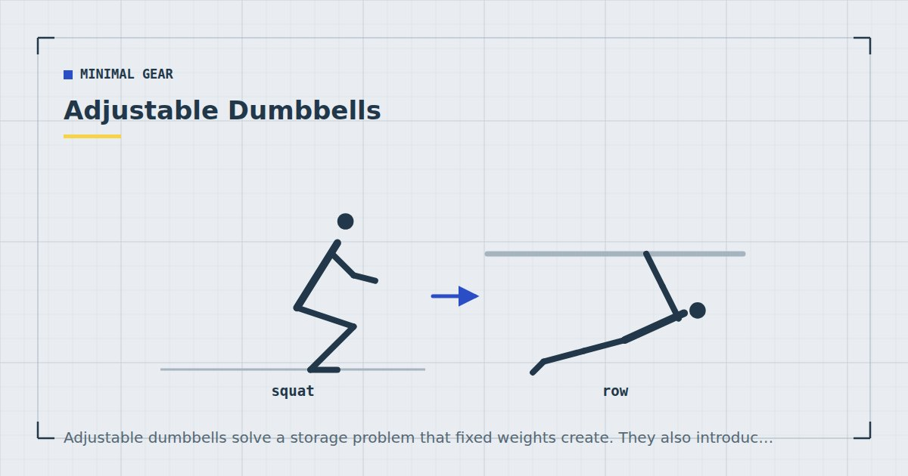

Minimal Gear
Adjustable Dumbbells: What to Look For on a Budget
Adjustable dumbbells solve a storage problem that fixed weights create. They also introduce failure modes that fixed weights do not have, and the cheapest ones introduce the worst.

A set of fixed dumbbells covering a useful range occupies a metre of floor and costs a great deal. Adjustable dumbbells compress that into one object, which is why they exist and why they dominate home training.
What you are buying is the adjustment mechanism. The iron is commodity; the mechanism is where the money, the convenience and the failures are.
Why adjustable at all
For home training the case is mostly about space. A single adjustable dumbbell replaces perhaps eight fixed ones and stores in the footprint of a shoebox — which matters in a flat, as covered in how to store home gym equipment.
The secondary case is progression. Bodyweight training progresses by making movements harder; a weight lets you progress by adding load to a movement you have already mastered, which is cleaner. That argument is made in full in weighted vest training and applies equally here.
The three mechanisms
1. Spinlock (threaded collar)
A bar with a threaded end; you slide plates on and screw a collar down. The oldest design and by far the cheapest.
Good: cheap, simple, essentially nothing to break, and plates are easy to add later. Very robust.
Bad: slow. Changing weight takes a minute or two per dumbbell, which is genuinely disruptive in a session with short rest periods. Collars can also work loose during use if not tightened firmly.
Best for: people on a tight budget who do not change weight often within a session.
2. Selector pin or dial
The dumbbell sits in a cradle; turning a dial or moving a pin engages the number of plates you want, and you lift it out. Weight changes take a few seconds.
Good: fast, convenient, and the reason these dominate the market.
Bad: the most complex mechanism and the most likely to break. Also bulkier than a fixed dumbbell of the same weight, which can obstruct exercises where the ends come close to your body. The cradle takes floor space, partly undoing the storage advantage.
Best for: most people, if the budget allows a reputable one.
3. Block and pin
Rectangular plates in a block, secured with a pin. Mechanically simpler than a dial system, slower than one, faster than spinlock.
Good: a reasonable middle ground, and generally robust.
Bad: the square profile is awkward for some exercises, and they are usually heavier for a given load.
What weight range you need
Less than the marketing suggests, if you are training at home with bodyweight as the foundation.
The useful test is whether you can press it overhead in one hand for about eight to ten repetitions. For most untrained adults that lands between 8 and 15 kilograms, which means a dumbbell adjustable to about 20 to 24 kilograms covers you for a long time.
Where you need more is two-handed lower-body work — goblet squats and Romanian deadlifts — where a 20-kilogram dumbbell becomes light within months. The practical response for home training is to use single-leg variations instead, which load the leg heavily with a modest weight. That approach is set out in the one dumbbell workout and training legs at home without equipment.
Buying a 40-kilogram-capacity set is usually money spent on capacity you will not reach, at the cost of a bulkier and more failure-prone mechanism.
How they fail
Worth knowing, because it should shape what you buy.
Selector mechanisms fail to fully engage. The failure mode is a plate detaching mid-rep. This is the reason not to buy the cheapest dial-type dumbbells, and the reason to check engagement before every set by lifting the dumbbell a few centimetres and giving it a gentle shake before pressing anything overhead.
Plastic housings crack when dropped. Adjustable dumbbells generally do not tolerate being dropped, unlike fixed iron. If your training involves setting weights down quickly, this matters.
Spinlock collars work loose during high-repetition sets, particularly with sweaty hands. Tighten firmly and re-check between sets.
Before any overhead or lying pressing movement, lift the dumbbell a few centimetres and shake it gently. A plate that is not fully engaged will rattle or shift. A plate detaching above your head or your face is the one genuinely serious risk with this equipment, and a two-second check eliminates it.
When fixed dumbbells are better
Three situations where fixed weights are the better buy.
If you only need one or two weights. A single 12-kilogram fixed dumbbell is cheap, indestructible, and covers a great deal for a home trainee using single-limb work. Adjustability you do not use is cost and complexity for nothing.
If you buy second-hand. Fixed dumbbells are the best used-equipment purchase there is: cast iron does not wear out, and they are heavily discounted because shipping weight makes them expensive to sell.
If you set weights down quickly between exercises, or train on a hard floor where a dropped adjustable dumbbell will crack.
One or two?
One, initially. Used unilaterally, a single dumbbell covers overhead pressing, rows, split squats, single-leg hinges and carries — and the asymmetry adds a genuine trunk demand as a by-product.
A second mainly improves efficiency, halving your set count because you train both sides at once. That is worth something if session time is your constraint, and it is not worth choosing over resistance bands or a pull-up bar if you have not yet solved pulling. The priority order is in the minimalist home gym guide.
You are buying the mechanism, not the iron. Everything that goes wrong with these is the mechanism.
A buying checklist
- Capacity 20–24 kg per dumbbell is plenty for most home training built on bodyweight.
- Increments of 2 kg or smaller, ideally. Large jumps make progression awkward.
- Check the length, since long adjustable dumbbells foul your body during rows and floor presses.
- Check the cradle footprint if it is a dial type — it partly undoes the storage benefit.
- Prefer metal engagement parts over plastic where you can see them.
- Buy one, not two, unless session time is your binding constraint.
And the usual caveat: adult activity guidance asks for muscle-strengthening activity involving all major muscle groups,1 and none of it requires a dumbbell. Light loads taken close to failure produce comparable muscle growth to heavy ones.2 Buy a weight because bodyweight progressions have run out, not because you assume you need one.
Where to go next
For what to do with one, see the one dumbbell full-body workout. For whether a kettlebell would suit you better, see kettlebell vs dumbbell for a small home setup.
Frequently asked questions
What weight adjustable dumbbells should I buy?
A capacity of 20 to 24 kilograms per dumbbell covers most home training built on a bodyweight foundation. Buying 40-kilogram capacity is usually paying for capacity you will not reach, at the cost of a bulkier and more failure-prone mechanism.
Are cheap adjustable dumbbells safe?
The main risk is a selector mechanism failing to fully engage and a plate detaching mid-repetition. Before any overhead or lying press, lift the dumbbell a few centimetres and shake it gently — a plate that is not engaged will rattle.
Are spinlock dumbbells any good?
Mechanically, yes — they are cheap, robust and have almost nothing to break. The drawback is speed: changing weight takes a minute or two per dumbbell, which disrupts sessions with short rest periods. Collars can also work loose during high-repetition sets.
Should I buy one dumbbell or two?
One, initially. Used one side at a time, a single dumbbell covers overhead pressing, rows, split squats, single-leg hinges and carries, and the asymmetry trains the trunk as a by-product. A second mainly improves efficiency.
Are fixed dumbbells better than adjustable ones?
Better if you only need one or two weights, if you are buying second-hand, or if you set weights down quickly. Cast iron does not wear out and is heavily discounted used, because shipping weight makes it expensive to sell.
Do I need dumbbells to train at home?
No. Adult activity guidance requires no equipment, and light loads taken close to failure produce comparable muscle growth to heavy ones. Buy a weight when bodyweight progressions have genuinely run out.
Sources and further reading
- World Health Organization. WHO Guidelines on Physical Activity and Sedentary Behaviour. 2020.
- Schoenfeld BJ, Grgic J, Ogborn D, Krieger JW. “Strength and Hypertrophy Adaptations Between Low- vs. High-Load Resistance Training: A Systematic Review and Meta-analysis.” Journal of Strength and Conditioning Research, 2017;31(12):3508–3523. PubMed.
- Schoenfeld BJ, Ogborn D, Krieger JW. “Dose-response relationship between weekly resistance training volume and increases in muscle mass: A systematic review and meta-analysis.” Journal of Sports Sciences, 2017;35(11):1073–1082. PubMed.
- NHS. Strength and Flex exercise plan.
Comments
Comments are not enabled yet. Add a hosted comment embed (Disqus, Commento, Giscus) inside this container when you are ready.